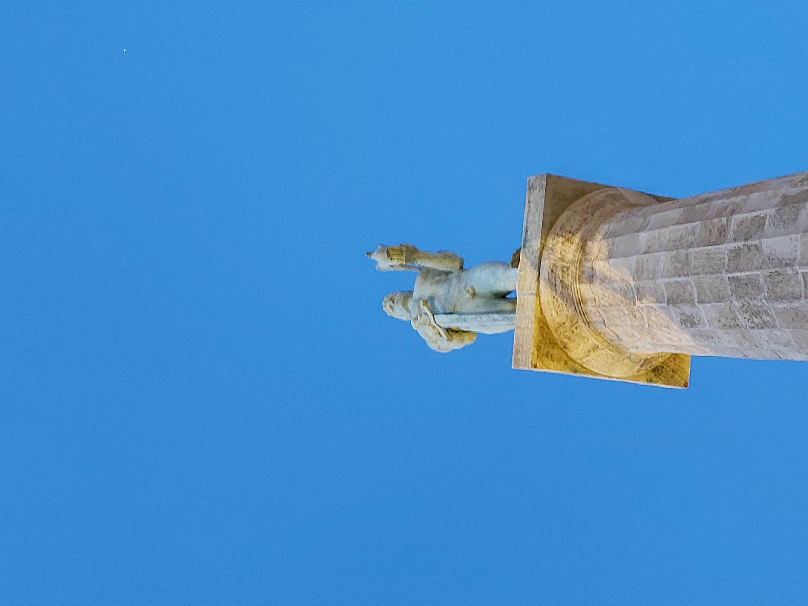
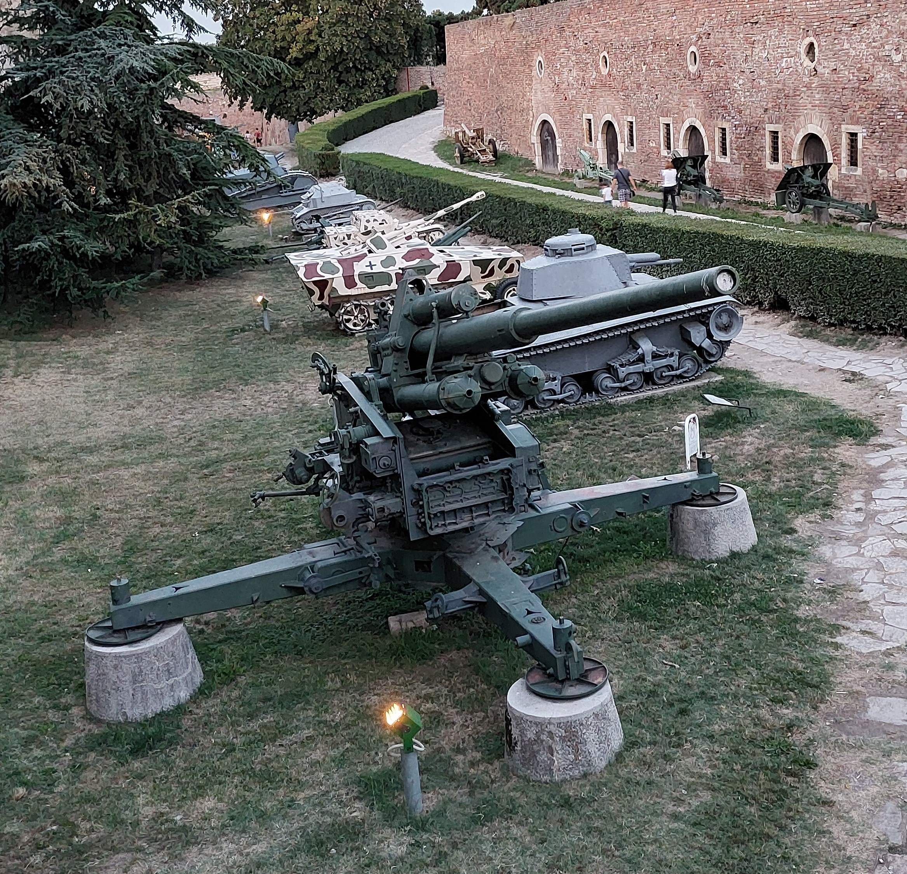

Größere Karte anzeigen
Man fährt zu Ada Ciganlija mit einem Boot! Es gibt kleine Boote auf denen sogar Restaurants sein können!
 ^
^[2]

| [0] |  [0] |
Größere Karte anzeigen |
Man fährt zu Ada Ciganlija mit einem Boot! Es gibt kleine Boote auf denen sogar Restaurants sein können! ^[2] |